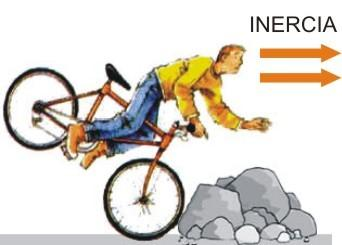

Primera Ley de Newton

También conocida como la Ley de la Inercia, es un principio fundamental en la física que describe cómo los objetos se comportan en ausencia de fuerzas externas. Esta ley establece que un objeto en reposo tiende a permanecer en reposo, y un objeto en movimiento tiende a permanecer en movimiento con la misma velocidad y en la misma dirección, a menos que una fuerza externa actúe sobre él.
Aquí hay una explicación más detallada de los conceptos clave relacionados con la Primera Ley de Newton:
Inercia: La inercia es una propiedad fundamental de la materia que se relaciona con la tendencia de los objetos a resistir cambios en su estado de movimiento. Un objeto con más masa tiene más inercia y, por lo tanto, es más resistente a cambios en su velocidad o dirección.
Estado de movimiento: La Primera Ley de Newton se refiere al concepto de que un objeto en reposo permanecerá en reposo a menos que una fuerza actúe sobre él. Esto significa que si un objeto está en reposo en una superficie sin fricción y no se le aplica ninguna fuerza, permanecerá en reposo indefinidamente. Del mismo modo, un objeto en movimiento continuará moviéndose a una velocidad constante en línea recta a menos que una fuerza externa cambie su velocidad o dirección.
Fuerzas equilibradas: Cuando las fuerzas que actúan sobre un objeto se equilibran, es decir, la suma de todas las fuerzas es igual a cero, el objeto permanecerá en su estado actual de movimiento. Esto significa que si todas las fuerzas que actúan sobre un objeto se cancelan entre sí, el objeto no cambiará su movimiento. Por ejemplo, si un automóvil se está moviendo a una velocidad constante en una carretera recta y no se aplican fuerzas adicionales (como presionar el acelerador o frenar), continuará moviéndose a la misma velocidad.
Aplicaciones en la vida cotidiana: La Primera Ley de Newton es un concepto que se puede observar en muchas situaciones cotidianas. Por ejemplo, cuando un automóvil se detiene en un semáforo, experimentamos la inercia cuando sentimos un tirón hacia adelante debido a la tendencia del cuerpo a mantenerse en movimiento. Del mismo modo, cuando un pasajero en un avión se levanta de su asiento, su cuerpo tiende a mantener su velocidad y dirección inicial hasta que una fuerza, como la gravedad, lo hace caer nuevamente.